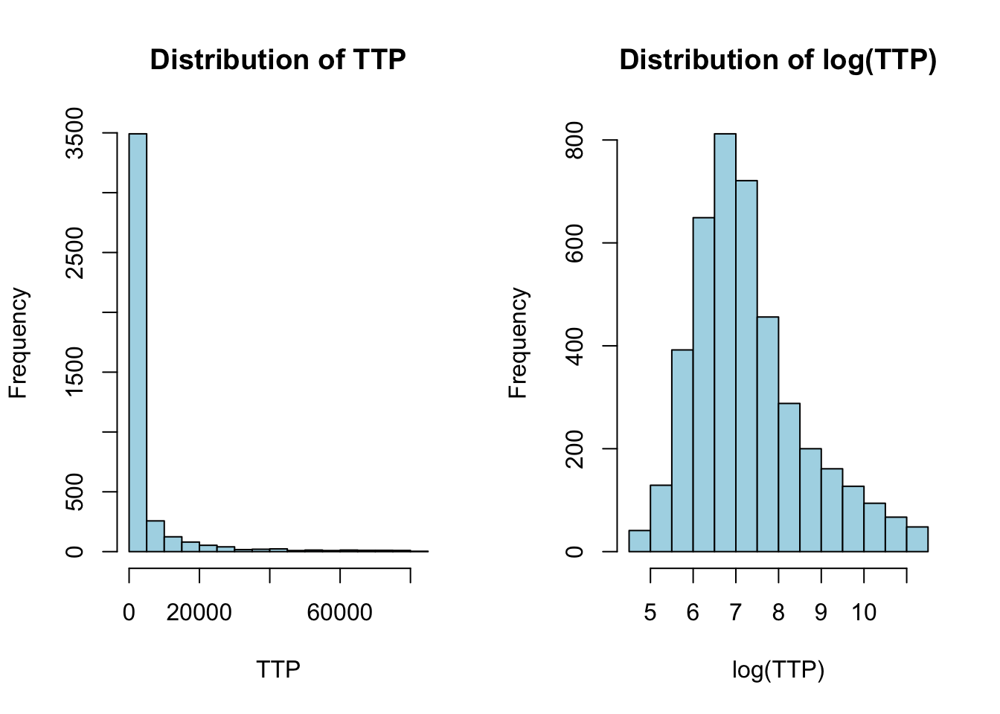
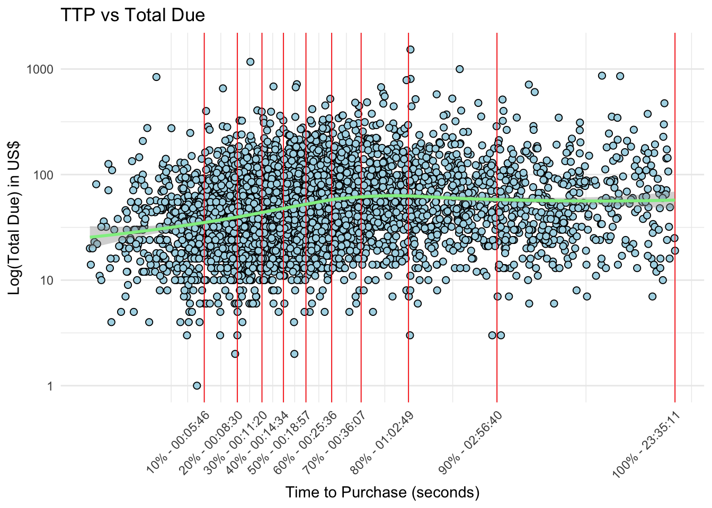

library(bigrquery)library(tidyverse)library(highcharter)library(plotly)library(lubridate)library(echarts4r)library(broom)library(flextable)library(reactable)library(GGally)library(jtools)library(ggstatsplot)library(viridis)# avoid the conflict with MASS::selectselect <- dplyr::select
Introduction
We work in an e-commerce company and have data about many browser actions perfomed by the user on our website. We would like to examine how much time is spent from our buying users from the moment that they land on the website to the moment that they complete the purchase.
Specifically, we would like to assess whether there are some differences based e.g. on the country where the user visits the website, the type of device (mobile or desktop), the period of the year, the amount of money spent, whether a certain campaign has an influence on this time, and so on.
We will first restrict our data to days when a given user makes actually purchases something, and we will primarily focus on the features that can be found in the dataset when the event_type is indeed purchase
Potentially interesting questions
Here are features of the purchasing session that could potentially influence the time-to-purchase (TTP) for a given user
Country: are there substantial differences between the TTP in different countries? We sell in ~80 countries, although the vast majority of the revenues comes from US, India and Canada.
Date and time of purchase: are there seasonal effects at the year/month/week level? Potentially there are also differences between different moments of the day. For simplicity, we will start to explore each of these subdivisions separately.
Returning customer: do returning customer go through the whole process quicker? Maybe because they already know the shop and trust it, or because they have already previously seen interesting products.
Relation with # of items or amount of US$ spent: do people take more time to purchase when they are buying more items or when they spend more?
Campaign: is TTP shorter when people buy during a campaign (e.g. Black Friday) or when they are directed to the website from a referral?
Category of items: it is possible to retrieve the category of items that were bought in a given session. Among these, it is particularly interesting to look at the category ‘SALE’. Do people who buy products on sale spend less time than in other categories (e.g. apparel or stationary) because maybe they feel that they need to hurry (as the product is on sale and they don’t know when the sale will end)
OS and browser: are TTP different for different browsers?
Device: do people buying from a mobile or desktop device have different TTP?
Data preparation
Load data and define factors
In addition, we remove some non-informative details about the campaign.
We first notice that the Time-to-purchase (TTP) is very skewed towards short values, but has a very long right tail (high TTP).
The highest values are in part due to countries with very high median TTP values and very few datapoints - see the adjacent barplot and table.
We will therefore start by removing the countries with a median \(TTP < 1.5*IQR(TTP)\) of the distribution of the median TTP, where IQR(TTP) is the interquartile range of the TTP distribution. About 1% of all the datapoints are removed.
Countries above \(1.5 * IQR(medianTTP)\) will not be considered
Code
# Create a ggplot histogramggplot(df, aes(x = TTP)) +geom_histogram(binwidth =1200, color ="black", fill ="lightblue") +labs(title ="Distribution of TTP in seconds across all countries", x ="Time to Purchase (TTP)") +# scale_x_continuous(labels = function(x) seconds_to_period(x)) +theme_minimal() -> ggggplotly(gg)
Code
df %>%select(country, TTP) %>%group_by(country) %>%summarise(median_TTP =median(TTP),percent_data =round(n()/nrow(df),4)*100 ) %>%arrange(median_TTP) %>%mutate(name =fct_reorder(country, desc(median_TTP))) %>%ggplot(aes(x = median_TTP, y = name, text =paste0(country,"\n percent data: ",percent_data) )) +theme_minimal() +theme(panel.grid =element_blank()) +geom_bar(stat ="identity", fill ="lightblue") +labs(title ="Median TTP per country",subtitle ="Hover to inspect the % of datapoints in that country",x ="median TTP", y ="Country" ) -> ggggplotly(gg)
It is possible to display the values in ascending/descending by clicking on the column header.
# Calculate the median TTP for each countrymedianTTP_tbl <- df %>%select(country,TTP) %>%group_by(country) %>%summarise(median_TTP =median(TTP)) %>%arrange(desc(median_TTP))ggplot(medianTTP_tbl %>%filter(median_TTP <1e4), aes(y = median_TTP)) +geom_boxplot() +labs(title ="Boxplot of Median Time to Purchase",y ="Median Time to Purchase (seconds)") +theme_minimal() -> ggggplotly(gg)
Code
# Remove countries with median TTP above 1.5 * IQR(medianTTP)thr_median_TTP <- medianTTP_tbl$median_TTP %>% median +1.5*IQR(medianTTP_tbl$median_TTP)df <- df %>%group_by(country) %>%mutate(medianTTP =median(TTP)) %>%relocate(medianTTP) %>%filter(medianTTP <= thr_median_TTP) %>%ungroup()
Choice of the reference TTP
Even in countries where the median TTP is within acceptable range, we still have very long sessions. Very long sessions do not necessarily signal “outliers”, however before carrying out any analysis, we need to ask whether it makes sense to consider sessions of any length.
Since eventually we are interested in assessing the effect of session length on revenues, we will operate a choice that takes into consideration both metrics - i.e. TTP and total_due.
We observe that:
While plotting the raw TTP apparently shows that order amount decreases with increasing TTP, plotting order amount vs. log(TTP) reveals that order amount increase - at least in some orders - for sessions up to 40-60 minutes.
80% of sessions last up to an hour, while 90% of sessions up to three hours
We will consider sessions up to an hour - and later assess the impact of shorter or longer sessions
The TTP appear to follow a power-law: the length of the sessions decreases exponentially, as shown by the log-transformed TTP and by the red lines indicating the 80th, 90th and 95th quantiles of the distribution of TTP.
In this plot, the order value appear to be decreasing with session time, however this is just due to the concentration of TTP in short sessions.
Code
par(mfrow =c(1,2))pdf_TTP <-hist(df$TTP, main ="Distribution of TTP", xlab ="TTP", col ="lightblue")pdf_logTTP <-hist(log(df$TTP), main ="Distribution of log(TTP)", xlab ="log(TTP)",col="lightblue")

Code
par(mfrow =c(1,1))pTTP <-plot(df$TTP, df$total_due, pch =21, bg ="lightblue",xlab ="Time to Purchase (seconds)",ylab ="Total Due in US$",main ="TTP vs Total Due")q <-quantile(df$TTP, probs =c(0.80, 0.90, 0.95)) %>% round# construct a plot function for the quantiles linesplot_quantiles <-function(q,n) {abline(v = q[[n]], col ="red", lwd =2, lty =2)text(q[[n]] -2000, 1500, names(q[n]), col ="red")}# plot the quantile lines1:length(q) %>%walk(~plot_quantiles(q,.x))
By log-transforming TTP we observe that the length of the session has at least some effect on the amount of the order, up to 40-60 minutes. We will choose 1 hour as our threshold for the maximum session length, which gives us about 80% of the whole data.
Importantly we will carry out analyses on log-transformed data to decrease the deviation of the data from normality.
Code
breaks_log <-quantile(log(df$TTP), probs =seq(0.1,1,0.1))breaks_hms <-quantile(log(df$TTP), probs =seq(0.1,1,0.1)) %>%exp() %>%round() %>% seconds_to_period %>%map_chr(~sprintf("%02d:%02d:%02d",hour(.x),minute(.x),second(.x)))xlabels <-paste0(seq(10,100,10),"% - ", breaks_hms)# plot usd ~ logTTPdf %>%ggplot(aes(x =log(TTP), y = total_due)) +geom_point(fill ="lightblue", shape =21, size =2) +geom_vline(xintercept = breaks_log, linetype ="solid", color ="red", linewidth =0.3) +geom_smooth(method ="loess", formula ="y ~ x", color ="lightgreen", linetype ="solid", size =1 ) +theme_minimal() +labs(title ="TTP vs Total Due",x ="Time to Purchase (seconds)",y ="Total Due in US$") +scale_x_continuous(breaks = breaks_log, labels = xlabels ) +theme(axis.text.x =element_text(angle =45, hjust =1))
Code
# # plot log(usd) ~ logTTPdf %>%# filter(TTP <= 3600) %>%filter(total_due >=1) %>%ggplot(aes(x =log(TTP), y = total_due)) +geom_point(fill ="lightblue", shape =21, size =2) +geom_vline(xintercept = breaks_log, linetype ="solid", color ="red", linewidth =0.3) +geom_smooth(method ="loess", formula ="y ~ x", color ="lightgreen", linetype ="solid", linewidth =1 ) +theme_minimal() +labs(title ="TTP vs Total Due",x ="Time to Purchase (seconds)",y ="Log(Total Due) in US$") +scale_x_continuous(breaks = breaks_log, labels = xlabels ) +scale_y_log10() +# coord_cartesian(ylim = c(0, 750)) + # Set the y-axis limitstheme(axis.text.x =element_text(angle =45, hjust =1))

Code
par(mfrow=c(2,2))boxplot(df$total_due[df$total_due <300], horizontal = T, col ="lightgreen", outpch =3, outcol ="lightgreen", outcex =1.5,main ="Total due (limited to < 200 US$)")AOV <-round(sum(df$total_due) /nrow(df), 2)median_order_value <-median(df$total_due)hist(df$total_due, col ="lightgreen", main ="Distribution of total_due", xlab ="total_due")hist(df$total_due %>% log, col ="lightgreen", main ="Distribution of log(total_due)", xlab ="log(total_due)")qqnorm(log(df$total_due), col ="lightgreen")qqline(log(df$total_due),col ="red")
As a side note, the median order value is 48, very different from the average order value of 70.42 because there are orders extending up to 1500 USD. The order value follows a log-linear distribution
Code
# TTP between seconds_to_period(logTTP_range)logTTP_range <-6:9# Limit to 500 to have a better view of the distribution. # Stats with log are virtually identical thr_total_due <-500# function to use hms of logTTP as grouping variable for the plotlogTTP_to_hms <-function(logTTP) { hms <-round(logTTP) %>%exp() %>% round %>%seconds_to_period() %>%map_chr(~sprintf("%02d:%02d:%02d",hour(.x),minute(.x),second(.x)))}ddf <- df %>%select(TTP, total_due) %>%mutate(logTTP =log(TTP)) %>%filter(logTTP >=min(logTTP_range) & logTTP <=max(logTTP_range)) %>%mutate(logTTP_hms =logTTP_to_hms(logTTP) ) %>%mutate(logUSD =log(total_due +1)) %>%filter(total_due <=500)ggbetweenstats(data = ddf,x = logTTP_hms,y = total_due)
Code
# Proportion of high- vs. low-amount orders over timeddf <- df %>%mutate(logTTP =log(TTP)) %>%select(logTTP, total_due) %>%mutate(ntile_logTTP =ntile(logTTP, 10)) %>%mutate(ntile_logUSD =ntile(log(total_due),10)) %>%group_by(ntile_logTTP, ntile_logUSD) %>%count() %>%ungroup(ntile_logUSD) %>%mutate(perctent_of_purchase =round(n/sum(n),4)*100 ) %>%select(-n) %>%arrange(ntile_logTTP)# Quantiles of TTP (for xaxis labels)q_TTP <-quantile(log(df$TTP), probs =seq(0.1, 1, 0.1) ) %>%exp() %>%seconds_to_period() %>%round() %>%map_chr(~sprintf("%02d:%02d:%02d",hour(.x), minute(.x),second(.x)))# Create a custom color palette using viridis colormapcustom_palette <-viridis(10)# Define the quantile values and labelsquantile_probs <-seq(0.1, 1, 0.1)quantile_labels <-quantile(df$total_due %>%log(), probs = quantile_probs) %>%exp() %>%as.character()# Modify the levels and labels of ntile_logUSDddf$ntile_logUSD <-factor(ddf$ntile_logUSD, levels =1:10, labels = quantile_labels)ggplot(ddf, aes(x =factor(ntile_logTTP), y = perctent_of_purchase, fill =factor(ntile_logUSD))) +geom_bar(stat ="identity", position =position_stack(reverse =TRUE), show.legend =TRUE) +scale_fill_manual(values = custom_palette) +xlab("ntile_logTTP") +ylab("Proportion of Purchase") +labs(fill ="ntile_logUSD") +theme_minimal() +scale_x_discrete(labels =as.character(q_TTP)) +labs(title ="Proportion of low- and high-revenue orders in increasingly longer sessions",x ="Session duration in hh:mm",y ="Proportion of Purchases" ) +theme(axis.text.x =element_text(angle =45, hjust =1)) -> gg# # If I use the following, the legend disappears in ggplotly# p <- p + guides(fill = guide_legend(reverse = TRUE), show.legend = TRUE) # Reverse the order of the legendggplotly(gg, config =list(displayModeBar =FALSE))
If we wish to modify the range of TTP we consider, please enter the value of TTP in seconds below.
Code
# enter the desired value here to override the choice of 95% of TTPmaximum_TTP <-3600df_before_removing_extreme_TTP <- df# df <- df_before_removing_extreme_TTP# filter TTP < maximum_TTP and also create a column with its logdf <- df %>%filter(TTP <= maximum_TTP) %>%mutate(logTTP =log(TTP)) %>%relocate(TTP,logTTP)
Analysis
Relationship with count of other events
There appear to be an association between TTP and some events, namely # of scrolls, page views, item views and user engagement. This is not surprising. However, such association is not straightforward: users with short sessions record few events, while users with long sessions can record either few or many events. Overall this is not an interesting finding.
A better analysis of these associations should consider not only the number but also the duration of the events. This will be explored in the future.
User who buy ON SALE products have longer sessions
About 1 in 8 users buy goods which are in the ON SALE category of the webstore. We hypothesized that people buying items on sale would have quicker sessions, speculating that the sale might not last long or other people might take advantage of that.
Instead, exactly the opposite happens: people who buy items on sale have overall longer sessions that people choosing items from categories with regular prices.
NB: The ‘Sale’ information is taken from the items added to the cart, not just from the page viewed.
The longer session is not specifically linked to any kind of event, although a more accurate analysis would require to quantify the duration of different kind of events.
Code
df %>%select(is_on_sale, n_scrolls, n_page_view, n_view_item, n_user_engagement) %>%mutate(is_on_sale =ifelse(is_on_sale ==0, "regular_price","on_sale")) %>%# mutate(is_on_sale = factor(is_on_sale)) %>% pivot_longer(cols =starts_with("n_"), names_to ="event_type") %>%ggplot(aes(x = event_type, y = value, fill = is_on_sale)) +geom_boxplot() +theme_minimal() +labs(title ="Events for purchases on sale vs. with regular price",x ="Type of event", y ="# of recorded events" )
Interestingly, people who buy items from the ON SALE section of the website spend on average 25% more than from all the other categories.
Note: total_due values are limited to a max of 300 USD for clarity of visualization.
Code
ddf %>%# filter(total_due < 300) %>%ggbetweenstats(x = is_on_sale,y = total_due,ylab ="total due in US $",type ="nonparametric") +scale_y_continuous(trans ="log", labels =function(x) round(x))
Scale for y is already present.
Adding another scale for y, which will replace the existing scale.
The fact that people who choose the ON SALE category spend more is true for sessions of almost all durations
Returning customers are (slightly) faster to purchase
The range of session length for returning customers is comparable to new customers, however on average they spend a few minutes less (~ 4 minutes) on the website.
Overall returning customers spend less time on any event, however the difference is not substantial.
Code
df %>%group_by(user_pseudo_id) %>%mutate(is_returning_customer =ifelse( event_date ==min(event_date), "new_customer", "returning_customer" )) %>%mutate(is_returning_customer =factor(is_returning_customer)) %>%ungroup() %>%select(is_returning_customer, n_scrolls, n_page_view, n_view_item, n_user_engagement) %>%pivot_longer(cols =starts_with("n_"), names_to ="event_type") %>%ggplot(aes(x = event_type, y = value, fill = is_returning_customer)) +geom_boxplot() +theme_minimal() +labs(title ="Events for purchases on sale vs. with regular price",x ="Type of event", y ="# of recorded events" )
As an additional information, returning customers do NOT spend more than new customers.
# median TTPddf <- df %>%select(TTP, total_due, min_purchase_time) %>%mutate(hour_purchase =hour(min_purchase_time)) %>%group_by(hour_purchase) %>%reframe(median_TTP =median(TTP),MAD_TTP =mad(TTP),MAD_low =floor(median(TTP) -mad(TTP)),MAD_high =ceiling(median(TTP) +mad(TTP)) ) %>%ungroup()# plotddf %>%hchart(type ="column", hcaes(y = median_TTP, x = hour_purchase), name ="hour") %>%hc_add_series(data = ddf, type ="errorbar", hcaes(y = median_TTP, low = MAD_low, high = MAD_high),name ="MAD" ) %>%hc_title(text ="TTP Range per hour segment")
Code
# median total_dueddf <- df %>%select(TTP, total_due, min_purchase_time) %>%mutate(hour_purchase =hour(min_purchase_time)) %>%group_by(hour_purchase) %>%reframe(median_USD =median(total_due),MAD_USD =mad(total_due),MAD_low =floor(median(total_due) -mad(total_due)),MAD_high =ceiling(median(total_due) +mad(total_due)) ) %>%ungroup()# plotddf %>%hchart(type ="column", hcaes(y = median_USD, x = hour_purchase), name ="hour") %>%hc_add_series(data = ddf, type ="errorbar", hcaes(y = median_USD, low = MAD_low, high = MAD_high),name ="MAD" ) %>%hc_title(text ="US$ per hour segment")
Summary of Main Results
The session duration decreases exponentially: the median session - when counting all timepoints - is just less than 20 minutes. When the estimate is restricted to sessions within an hour, purchases happen in less than 15 minutes (median).
80% of all sessions last less than 1 hour, and ~ 70% less than 30 minutes, with no apparent effect of time of the day, week or year.
This is also the timeframe in which the amount order tend to increase, although only in a fraction of purchases
User who choose the ON SALE category of the website have longer sessions, record more events and spend more
Returning customers purchase within a few minutes less (~ 4 minutes) than new customers. However, returning customers do not spend more than new customers
Session duration and order amount for referral purchases are comparable to non-referral purchases (difference is significant but effect size is too small to be relevant : ~ 1 minute)
Interestingly, there is no significant difference in session time for people using either a desktop or a mobile device
Insights
Focus on sleek UX: It does not appear that longer session would increase sales or order value, therefore any plan (if present) to increase the complexity of the webstore - to increase the time spent navigating the webstore - should be evaluated with caution
Potentiate the ON SALE section: The ON SALE section of the website drives longer sessions (~ 25 minutes) and higher revenues than all the other sections. Currently it attracts about 12% of the visitors. On the basis of the current data, a potentiation of the ON SALE section has the best prospect for increasing revenues
Activate recurring customer: Currently, recurring customers are faster to purchase, but do not spend more than new customers. This suggests that the UX is not building enthusiasm for the products. One could explore using personalized recommendation and - if this improves sales - implementing a “Suggested for You” section on the website based on historical data.
Appendix: Box-Cox transformation
The session time data follows a power law. We used a log transformation to make the data more close to a normal distribution, however this transformation was suboptimal, as it can be seen from the following.
Code
# limit TTP to one hour maxx <- df$TTP[df$TTP <3600]par(mfrow =c(2,2))hist(x)hist(log(x))qqnorm(x, main ="Q-Q plot of TTP")qqnorm(log(x), main ="Q-Q plot of log(TTP)")
Code
shapiro.test(log(x))
Shapiro-Wilk normality test
data: log(x)
W = 0.98783, p-value = 2.715e-16
To work around this issue, we used nonparametric tests in our comparisons (although permutation tests would have probably be better).
Now we try a better way to transform data, namely using the Box-Cox transformation. For this we follow the book “R for Marketing Analytics” at page 102 and subsequent.
Box-Cox transformation is useful whenever our data follow a power law, such as \(y = x^{-m} = 1/x^{m}\)
In these cases, the Box-Cox transformation works by estimating a value \(lambda\) which is used as follows:
\(y^\lambda = \frac{y^{\lambda} - 1}{\lambda}\) if \(\lambda \neq 0\)
\(y^\lambda = log(\lambda)\) if \(\lambda = 0\)
With the aim of approximating a normal distribution in the transformed data.
To estimate the value of lambda, we can use car::powerTransform
Code
library(car)
Loading required package: carData
Attaching package: 'car'
The following object is masked from 'package:dplyr':
recode
The following object is masked from 'package:purrr':
some
Code
lambda <-powerTransform(1/x) %>% coef
and then using this value to transform our data:
Code
xbc <-bcPower(x, lambda)
Code
par(mfrow =c(2,2))hist(xbc, breaks =30, main ="PMF of Box-Cox(x)")hist(log(x), breaks =30, main ="PMF of log(x)")qqnorm(xbc, main ="Q-Q plot of the Box-Cox transform of x")qqplot(xbc, log(x), main ="Q-Q plot of xbc ~ log(x)")
Code
shapiro.test(xbc)
Shapiro-Wilk normality test
data: xbc
W = 0.97822, p-value < 2.2e-16
In this case we can see - from the plots and from the Shapiro test for normality - that the Box-Cox transformation does not manage to achieve a better approximation to normality with respect to our choice of log(TTP)